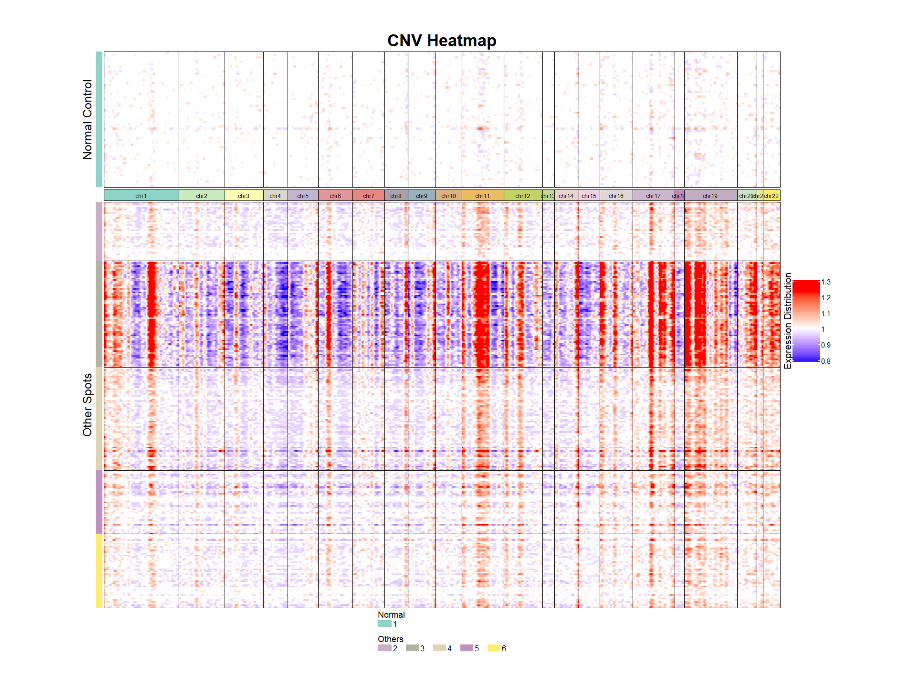

Introduction to TUSCAN
Chenxuan Zang, Charles C. Guo, Peng Wei, and Ziyi Li
Intro_to_TUSCAN.RmdLoading required input data
TUSCAN requires three types of input data:
- Spatial transcriptomics count data.
- Spatial location information.
- Original histology image.
We used the HER2-positive breast cancer sample data (patient B, replicate 1) from the 2021 Andersson’s paper for the illustration in this vignette. The gene expression profile was measured from the Spatial Transcriptomics (ST) platform, with 293 spots and 16,148 genes detected.
Spatial transcriptomics count data
The spatial raw count data should be a \(N \times D\) matrix, with rows (\(N\)) representing genes and columns (\(D\)) representing spots.
Spatial location information
The spatial location data should be a dataframe where each row represents a spatial spot. This dataframe contains two columns ‘x’ and ‘y’, with ‘x’ representing the row pixel coordinate of the spot on the histology image and ‘y’ representing the column pixel coordinate of the spot on the histology image. The rownames of the spatial location dataframe should match exactly with the colnames of the spatial count data.
Histology image
The input image should be the original high-resolution H&E image of the measured sample.
## load the example histology image
image_path <- system.file("data", "example.jpg", package = "TUSCAN")
img <- image_read(image_path)
par(mar = c(1, 0, 1, 0))
plot(img)
Here provide an example code to read in 10x Visium data.
library(dplyr)
count.data <- Seurat::Read10X_h5("path/to/name_filtered_feature_bc_matrix.h5")
loc.data <- read.csv("path/to/tissue_positions_list.csv")
loc.data <- loc.data %>% filter (X0==1)
loc.data <- data.frame(x=loc.data[,6],y=loc.data[,5])
image_path <- "path/to/image"
img <- image_read(image_path)Create TUSCAN object
We can use createTUSCANObject() to create a TUSCAN
object. The required inputs are raw count matrix, location, and image.
project is a parameter that allows users to name their own
project. r is an image smoothing parameter. A detailed
explanation could refer to help(createTUSCANObject).
obj <- createTUSCANObject(counts = example_count,
location = example_loc,
img = img,
project="TUSCAN",
r=49)Identify normal reference
Dimension reduction
We first perform dimensional reduction on the spatial gene count
data. This step is realized by employing an autoencoder on the top
nhvg (default is 2000) highly variable genes (HVGs).
d is the number of dimensions after reduction (default is
20).
obj <- reduceDim(object = obj, nhvg=2000,d=20,epochs=50,batch_size=64, seed = 1234)
#> [1] "Start dimension reduction by autoencoder..."
#> 10/10 - 0s - 327ms/epoch - 33ms/step
#> [1] "Dimension reduction finished..."Preliminary clustering
To accurately infer copy number variations (CNV) through SRT data, we need to first recognize a subset of normal spots as the reference baseline values. So we first conduct a preliminary clustering based on the spatial gene expression data and histology image. Since more than one cluster may comprise normal cells, we recommend over clustering at this step to identify the most likely cluster with the highest purity as the normal cluster.
PreCluster() functions clusters the spots. It provides
two clustering methods:km(K-Means) and louvain
(Louvain). For K-Means method, the number of clusters k
needs to be specified. For louvain clustering, the number of clusters
can be adjusted by the parameter res.
# pre-clustering
obj <- PreCluster(object = obj, method = 'km', k=6, seed = 1234)
#> [1] "Found 6 clusters"Visualizing spatial clusters
plotSpatial(obj = obj, class = "cluster", size = 5)Determine the cluster selected as the reference
FindNormalCluster() function can print the name of group
from the previous clustering result that is most probable to be the
normal reference.
FindNormalCluster(obj)
#> number of iterations= 40
#> number of iterations= 59
#> number of iterations= 65
#> number of iterations= 63
#> number of iterations= 66
#> number of iterations= 137
#> [1] "Cluster 1 is selected as the normal reference."Inferring the spatial copy number profile
Next we can run the runCNV() function to construct the
CNV profile. The essential parameters are:
-
object: TUSCAN object.
-
ref_group_names: A vector containing the cluster name(s) of the reference spots used for inferring CNV.
-
min_ave_counts_per_gene: Minimum average gene expression level across all spots (default: 0.01).
-
min_spots_per_gene: Minimum number of spots requiring expression measurements to include the corresponding gene (default: 3).
-
chr_exclude: List of chromosomes in the reference genome annotations that should be excluded from analysis (default: c(‘chrX’, ‘chrY’, ‘chrM’).
-
normalization: Whether perform normalization step. We suggest to skip this step if the SRT data is generated from ST platform (default: TRUE).
The computed copy number matrix is stored in the slot
cnv.data of the TUSCAN object. More details of
runCNV() function could refer to
help(runCNV).
cnv_obj <- runCNV(object = obj,
ref_group_names = c("1"),
min_ave_counts_per_gene=0.01,
min_spots_per_gene=3,
chr_exclude=c('chrX', 'chrY', 'chrM'),
normalization = FALSE)
#> [1] "create pre-CNV analysis object ..."
#> [1] "filtering data ..."
#> [1] "15109 genes and 295 spots in raw count matrix"
#> [1] "filtered out 2357 genes with less than 0.01 average counts; remaining 12752 genes"
#> [1] "filtered out 70 genes that expressed in less than 3 spots; remaining 12682 genes"
#> [1] "find 12092 mathed genes in the count matrix and gene order file"
#> [1] "start cnv analysis process ..."
#> [1] "step 1: perform log transformation ..."
#> [1] "step 2: subtract average normal spots gene expression ..."
#> [1] "step 3: Apply maximum centered expression thresholds to data ..."
#> [1] "step 4: smooth the data along chromosome with gene windows ..."
#> [1] "step 5: center spots/observations after smoothing ..."
#> [1] "step 6: subtract average reference ..."
#> [1] "step 7: invert log transform ..."Visualizing spatial CNV by heatmap
plotCNVheatmap(object = cnv_obj, title = "heatmap", output_format = "png")
#> agg_png
#> 2
image <- image_read("heatmap.png")
par(mar = c(0.5, 0.2, 0.5, 0.2))
plot(image)
Identify tumor region
tumor <- TumorCluster(object = cnv_obj, seed = 1234)Visualizing tumor region
plotSpatial(obj = tumor, class = "tumor", size = 5)